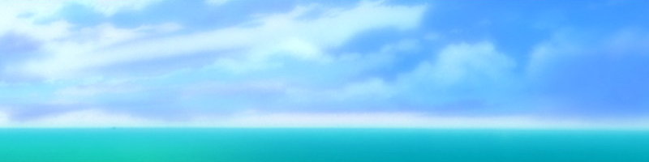

1月里清澈的大海 刺骨的寒风 有时，强风会带动松林摇摆 同时掀起海潮的声响  「只有这个啊」 我将印刷着白石建筑公司字样的浴巾递给了她 那是我们曾经用来擦身的东西 「·······」 「别那么失望嘛」 「···嗯」 她有些不满地接过了浴巾。 我根本就没办法去给她找泳装。 何况，她居然在这个季节，这个地方，提出想要比基尼。 我没有办法，只好在车里翻找了一通， 最终从那堆衣物里找出了这白色的浴巾。 片刻之后··· 她穿着心爱的裙子 将浴巾卷在胸前回来了 「···怎么样？」 「额，该怎么说呢···」 「看上去···不奇怪吧？」 「嗯···大概没问题吧」 「··········」 「嗯，一点问题也没有，一点也不奇怪的」 「嗯，知道了···」 她慢慢地走向了大海 海浪拍打着沙滩 长发在冰冷的海风中飘动着 从空中飘下的点点雪花 更增添了几分寒意 再这样一幅背景下，她双手拿着鞋子··· 喜悦地、兴奋地 在水中漫步着 「那个···有模特的感觉吗？」 「嗯，还可以吧···」 在寒冬的空气中，我们的气息化作了白雾 之后， 我掏出了从车里带出的照相机 ···是那台简陋的一次性相机 里边还剩下最后的一张胶卷 「那我准备拍了」 「欸···？」 「一定···会拍出更多模特的感觉来的」 说着，我举起了相机。 「········」 「来，大方一点」 「···嗯」 岸边 我透过相机的取景器注视着她。 或许是因为紧张，或许是因为害羞··· 她的表情显得很复杂 「我说，就不能摆个好看点的造型吗？」 「···可是···」 「别想那么多了，偶像们可绝对不会呆呆地傻站着拍照哦」 「···好吧···」 尽管有些难为情···但她还是努力地··· 害羞地将一只手搭在腰间， 将另一只手伸起 ···她将手伸向了那冬日的晴空··· ···仿佛是在执着地···执着地追寻着什么··· 她的手高高地伸向天空。 在这片翡翠色的大海前··· 「我再提最后一个要求···」 「···嗯？」 「······笑一笑······」 「诶···？」 「···笑一笑吧，濑津美···」 「·····」 「···什么嘛···你明明年纪比我小···」 说着···她第一次对着我笑了。 她穿着心爱的裙子， 与白色的比基尼··· 在一次性相机的最后一张照片中对着我笑了。 在翡翠色的大海前对着我笑了。 仿佛偶像明星一般，对着我笑了··· 「好，接下来，再试着摆个更有动感的姿势吧」 「嗯」 她欢喜地，兴奋地在水边跳跃着。 尽管相机中已经没有胶卷了， 但我依然不断地为她拍着照。 「哦，你越来越兴奋了啊」 「没，没有的事啦···」 我们欢快地交谈着， 冰冷的雪则越下越大。 在用尽了胶卷的相机对面， 她对着镜头欢快地笑着。 尽管弱小的身躯在风中颤抖着， 但她却依然没有忘记那刚刚学会的笑容···「嗯···哦···时间已经到了吗」 「···嗯」 说着， 她像从前那样慢慢地走向了大海。 「啊，对了，驾照···」 「没关系，你就留作纪念吧」 「嗯，明白了···」 她点了点头，将驾照收进了口袋里。 那是我送给她的驾照。 是本来早已失去了作用的驾照。 之后，她从手腕上摘下那只白色的塑料手环··· ···将它递给了我。 「怎么···要送给我吗？」 「嗯，送给你···」 「是吗···那么我也就收作纪念了」 我接过那只手环。 也把它收进了自己的口袋。 随后，她再次向大海迈出了脚步··· 面对她的背影，我最后问道。 「···可以最后回答我一个问题吗？」 「嗯」 「你现在···希望我拉住你吗？」 「······」 「还是···希望我鼓励你呢？」 她在波浪中背对着我停下了脚步。 强风将浪头变作飞沫， 拍打在她的身上。 慢慢地，她转过身来··· 「是啊···谁知道呢」 「我自己也不知道···」 说着，她对着我，最后又微笑了一次。 尽管冰冷的飞沫拍打在她的身上，尽管眼中含满了泪水， 但她仍然对着我微笑了一次。 从前，在浪边停下的脚步··· 这一次，却再也没有停下来。 所以，我想，这就是她的回答吧···该道别了···就这样，我们960km的旅途结束了··· 对我来说是15天， 对她来说则是22年的旅途结束了。 她以自己的意志逃出了7楼与家的选择。 成为了2005年度推算自杀者人数三万五千人中的一位。 她的血型是O型，名字叫濑津美，22岁，女性··· 塑料识别手环的颜色是白色。 这就是属于她的一切。 但是，我知道。 她其实很喜欢比基尼，比导航系统更加熟悉道路， 喜欢车辆，甚至拥有自己的驾照。 尽管总是面无表情，也很少会看我一眼， 但偶尔，也会流露出那种好似害羞又好似倔强的神色··· 在翡翠色的大海前··· 她会兴奋地，喜悦地， 宛如偶像明星一般地对着我微笑···那么···再会···遗憾的是.... 她的笑容， 却仅仅被记录在了一张由一次性相机拍摄的照片中。 但是···尽管是仅存的一张照片··· 它也是我们所留下的痕迹······
FINAL
第八章 白石建筑公司